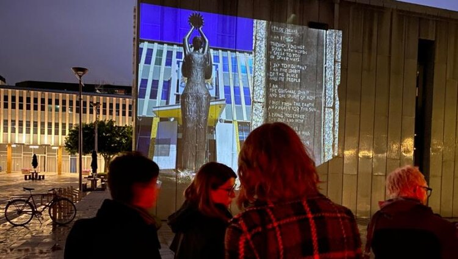
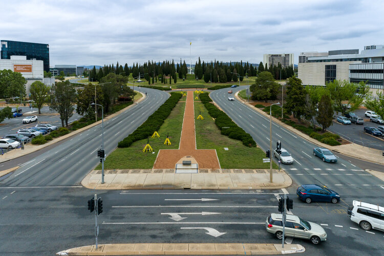

Festival
Info
Support
News
NEWS

contour 556 - Localjinni Twilight Walks in Canberra
21 December, 2020
contour 556 - 2020 Symposium
11 December, 2020

contour 556 - 2020 Festival Official Video
10 November, 2020